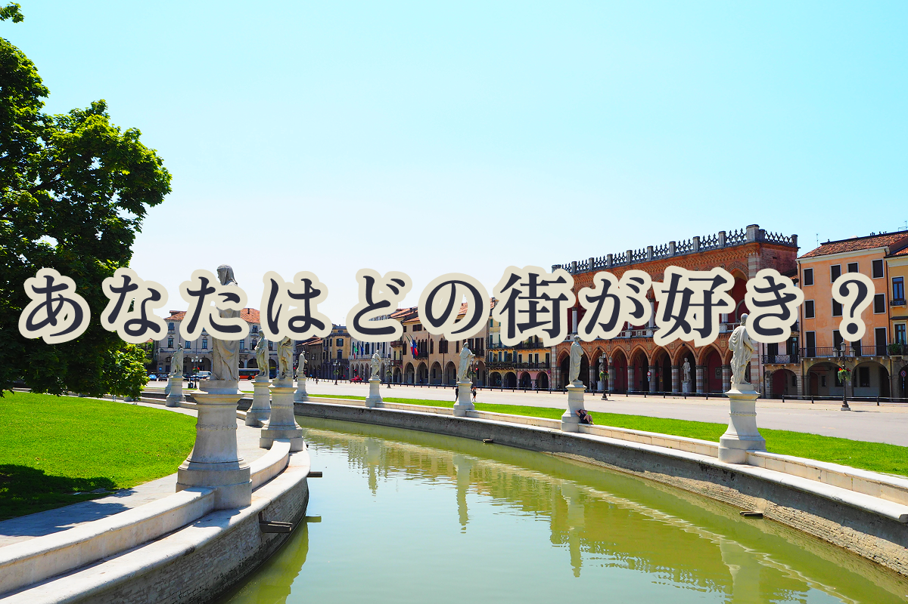
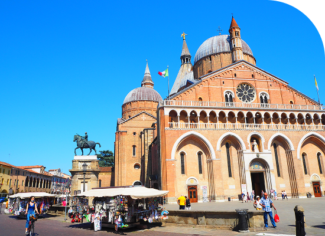
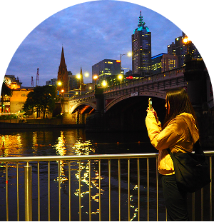

イタリア北東部、ヴェネト州に位置しています。
豊かな歴史と学問の伝統が息づいている街です。
ヨーロッパ最古の大学のひとつ、パドヴァ大学があります。
ユネスコ世界遺産に登録されたオルト･ボタニコや
ヨーロッパ最大級の広場
プラート･デッラ･ヴァッレも有名です。

お知らせ
2025/2/22
Padova
追加
街紹介
イタリアの街を紹介します

Padova
Treviso
イタリア北東部、ヴェネト州に位置しています。
ティラミス発祥の地として知られている街です。
中世の趣を残す古い城壁に囲まれ、
街の中心には穏やかに流れる運河が張り巡らされています。
歴史ある建築を眺めながら、石畳の道を散策できます。
ティラミス発祥の地として知られている街です。
中世の趣を残す古い城壁に囲まれ、
街の中心には穏やかに流れる運河が張り巡らされています。
歴史ある建築を眺めながら、石畳の道を散策できます。

Auronzo di cadore
イタリア北東部ヴェネト州ベッルーノ県に佇む小さな街です。
目の前に広がる雄大なアウロンツォ湖とともに、
訪れる人々を静かな癒しへと誘います。
夏は涼しく、避暑地として最適で、湖畔を散歩したり、
アルプスの澄んだ空気の中でゆったりした時間を過ごせます。
目の前に広がる雄大なアウロンツォ湖とともに、
訪れる人々を静かな癒しへと誘います。
夏は涼しく、避暑地として最適で、湖畔を散歩したり、
アルプスの澄んだ空気の中でゆったりした時間を過ごせます。
自己紹介

| 名前 | Ayaka |
|---|---|
| 出生地 | Fukuoka |
| 好き | 写真・旅行 |
| イタリアの好きな街 | Treviso |